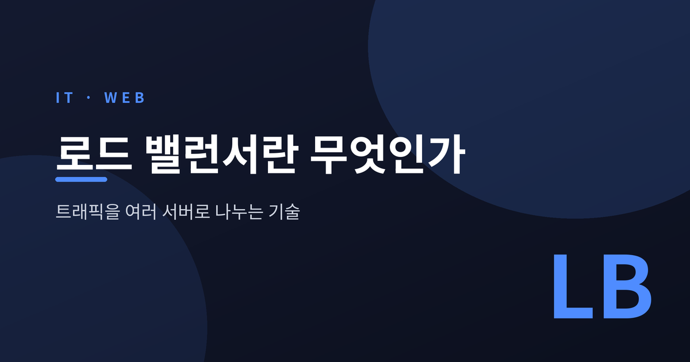
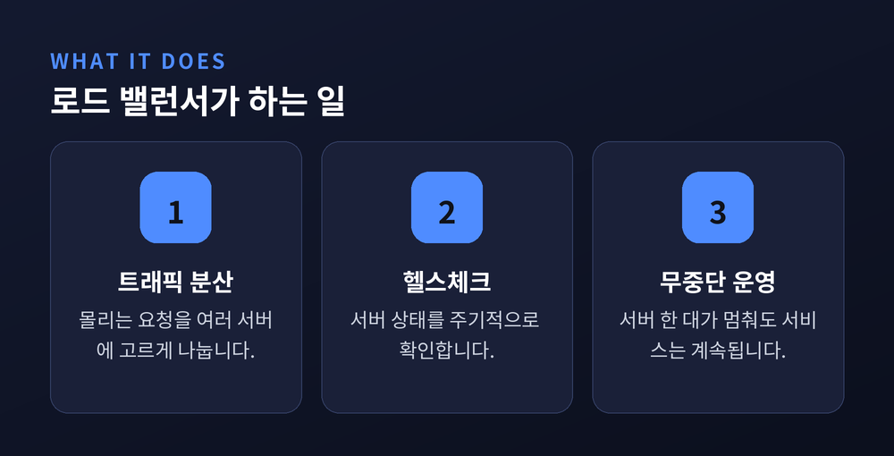
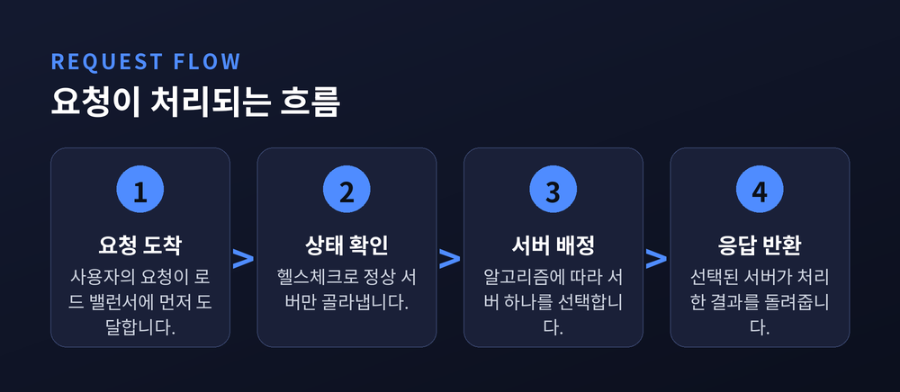
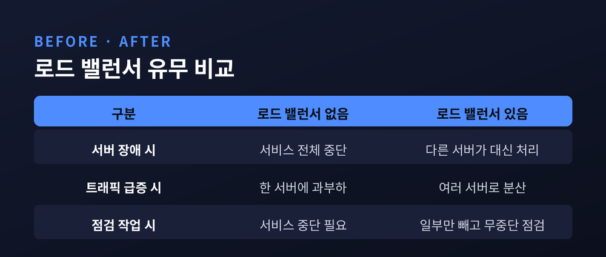

[IT] 로드 밸런서란 무엇인가 — 트래픽을 여러 서버로 나누는 기술

오늘은 로드 밸런서에 대해 이야기해 보려 합니다.
서버 한 대로 감당하기 어려운 트래픽을 여러 대에 나누어 처리하는 기술입니다.
개념과 동작 방식, 장점과 한계를 차례로 정리해 보겠습니다.
- 로드 밸런서는 들어오는 트래픽을 여러 서버에 고르게 분산하는 장치(또는 소프트웨어)입니다.
- 서버 한 대가 멈춰도 서비스가 끊기지 않도록 돕는 가용성 확보 수단입니다.
- 분산 방식에는 라운드로빈, 최소 연결 등 몇 가지 대표적인 알고리즘이 있습니다.
로드 밸런서란 무엇인가
로드 밸런서는 이름 그대로 부하(로드)를 나누어주는(밸런싱) 장치입니다.
사용자의 요청, 즉 트래픽이 한 서버에 몰리지 않도록 여러 서버로 고르게 배분합니다.
음식점에 비유하면 이해가 쉽습니다.
계산대가 하나뿐이면 손님이 몰릴 때 줄이 길어집니다.
계산대를 여러 개 두고 안내원이 손님을 나누어 보내면 대기 시간이 줄어드는데요.
그 안내원 역할을 하는 장치가 로드 밸런서입니다.
예전엔 트래픽이 늘면 서버 한 대의 사양을 높이는 방식이 흔했습니다.
지금은 저렴한 서버 여러 대를 두고 트래픽을 나누는 방식이 일반적입니다.
이 구조에서 없어서는 안 될 부품인 셈입니다.
쇼핑몰의 대규모 할인 행사를 떠올려 보시면 좋겠습니다.
평소보다 훨씬 많은 방문자가 짧은 시간에 몰립니다.
서버 한 대였다면 접속 자체가 어려웠을 상황을, 여러 서버가 나누어 받으면 한결 여유 있게 넘길 수 있습니다.
웹사이트뿐 아니라 모바일 앱 서버, 사내 시스템에서도 같은 원리로 쓰입니다.

트래픽을 나누는 방식
로드 밸런서가 요청을 나누는 방법은 몇 가지 알고리즘으로 정리됩니다.
가장 단순한 방식은 라운드로빈입니다.
요청이 들어오는 순서대로 서버에 차례로 배정합니다.
서버 성능이 비슷할 때 무난하게 쓰입니다.
최소 연결 방식은 현재 처리 중인 연결이 가장 적은 서버로 보냅니다.
서버마다 부하가 다를 때 더 균형 있게 분산됩니다.
IP 해시 방식은 같은 사용자의 요청을 항상 같은 서버로 보냅니다.
로그인 상태를 유지해야 하는 서비스에서 유용합니다.
이 장치는 분산 작업만 하는 것이 아닙니다.
주기적으로 서버 상태를 확인하는 헬스체크도 함께 수행합니다.
응답이 없는 서버는 목록에서 자동으로 제외합니다.
덕분에 서버 한 대에 문제가 생겨도 사용자는 대체로 눈치채지 못합니다.
조금 더 세분화하면, 전송 구간만 보고 나누는 방식과 요청 내용까지 들여다보고 나누는 방식으로도 구분됩니다.
전자는 속도가 빠르고, 후자는 정교하게 분산할 수 있다는 차이가 있습니다.
어떤 방식을 쓸지는 서비스의 규모와 성격에 따라 달라집니다.
직접 서버를 두지 않고, 클라우드 업체가 제공하는 관리형 로드 밸런서를 빌려 쓰는 경우도 많습니다.

장점과 한계
먼저 장점입니다.
서버 한 대가 멈춰도 서비스는 계속 유지됩니다.
트래픽이 늘어나면 서버를 추가하는 것만으로 대응할 수 있습니다.
점검이 필요한 서버를 잠시 빼두고 나머지로 운영하는 것도 가능합니다.
다만 한계도 있습니다.
로드 밸런서 자체가 고장 나면 전체 서비스가 멈출 수 있습니다.
그래서 이 장치 역시 이중화해 두는 경우가 많습니다.
알고리즘과 설정을 잘못 잡으면 특정 서버에만 트래픽이 쏠릴 수도 있습니다.
도입과 운영에 별도의 지식과 비용이 든다는 점도 감안해야 합니다.
처음부터 완벽하게 설정하기는 쉽지 않습니다.
서비스 규모가 작을 때는 서버 한두 대로도 충분할 수 있습니다.
트래픽이 늘어나는 시점에 맞춰 하나씩 도입해도 늦지 않다고 생각합니다.
중요한 것은 지금 당장의 규모가 아니라, 앞으로 트래픽이 늘어날 가능성을 미리 염두에 두는 자세입니다.

정리하면 이렇습니다.
이 기술은 트래픽을 여러 서버에 나누어 서비스를 안정적으로 유지합니다.
완벽한 만능 해법은 아니지만, 규모가 커지는 서비스에는 사실상 필수에 가깝다고 생각합니다.
"트래픽을 나누는 순간, 서버 한 대의 운명에 서비스 전체를 걸지 않아도 됩니다."
다음에 어떤 웹사이트에 접속할 때, 그 뒤에서 몇 대의 서버가 트래픽을 나누어 받고 있을지 한번 상상해 보시면 좋겠습니다.